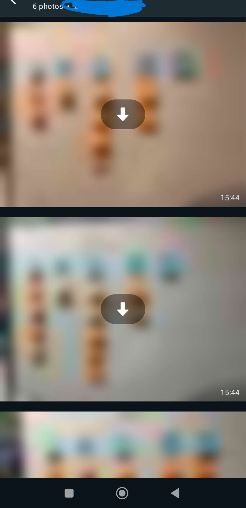
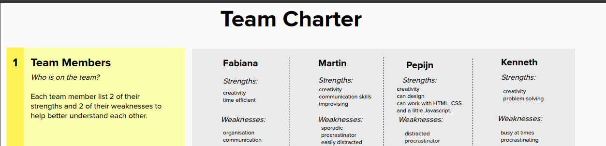
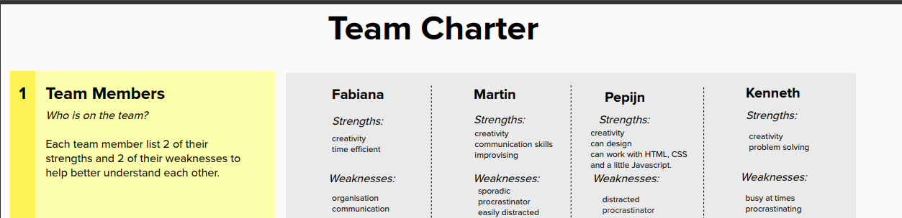
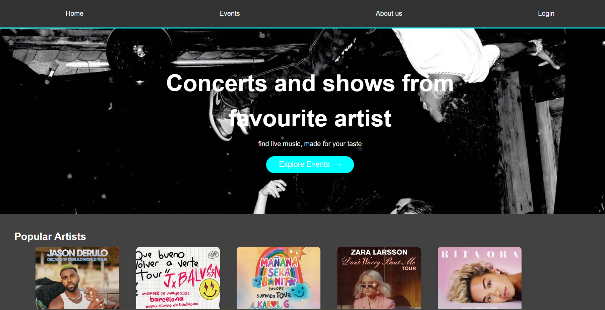
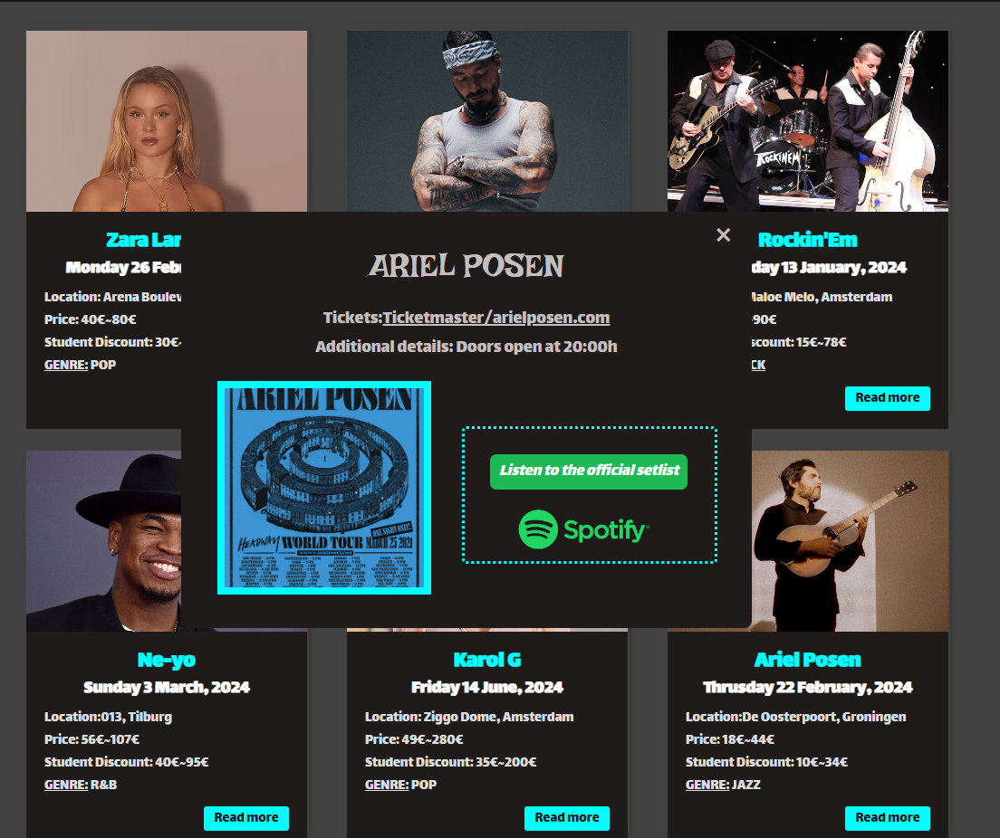
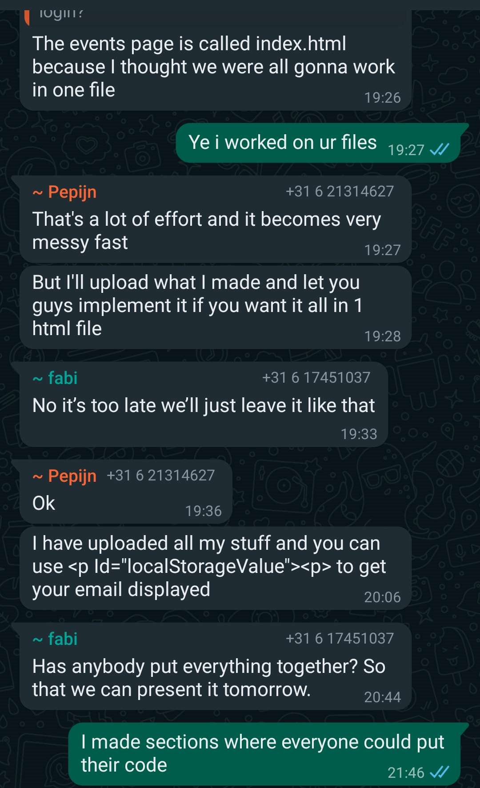

This project was a "end of semester one" showcase of our skillsets gathered thus far in our specialization phase and the amplification of those Technical and Professional skills. I believe I have met the Technical criteria through my studies involving HTML, CSS and beginner introduction to JavaScript through the showcase of this website. I will try to showcase the steps I have taken in my development towards this website, the group project as well to my disposal proving my Professional skills as well.
Let's begin with the group project
sadly going through the saved images I could not find any file that was not corrupted but I wanted to verify its existence
 

The first few weeks we had to decide who was going to lead the group and me and Fabiana took the initiative. As a group we would gather 3 days of the week and would do the assignet tasks in preporation for the coding. We experinented with a lot of layouts in figma, had a lot of ideas what functions the website might feature - calendar, location, about artist section, etc. And of course at the end of this phase we had built a solid idea of what we wanted.
  These several weeks of the project planing, development and presentation have been a loaded gun of challenges which we had to dodge, making or breaking the project. In summary, I would say that I have come out of this project learning more about myself, about teamwork and responsibility, communication as unlike the previous one this site was not the only issue but we managed to regain control in time to showcase our work. I did my best to ensure we deliever the project in the end. Moving forward I would like to showcase what I have learned about communication from these two (i believe sucessful) projects.
Always Work In Progress / Martin Petkov